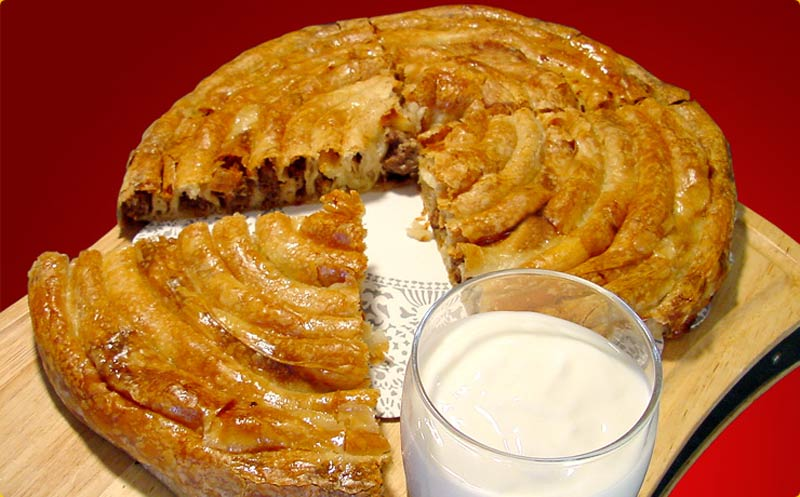
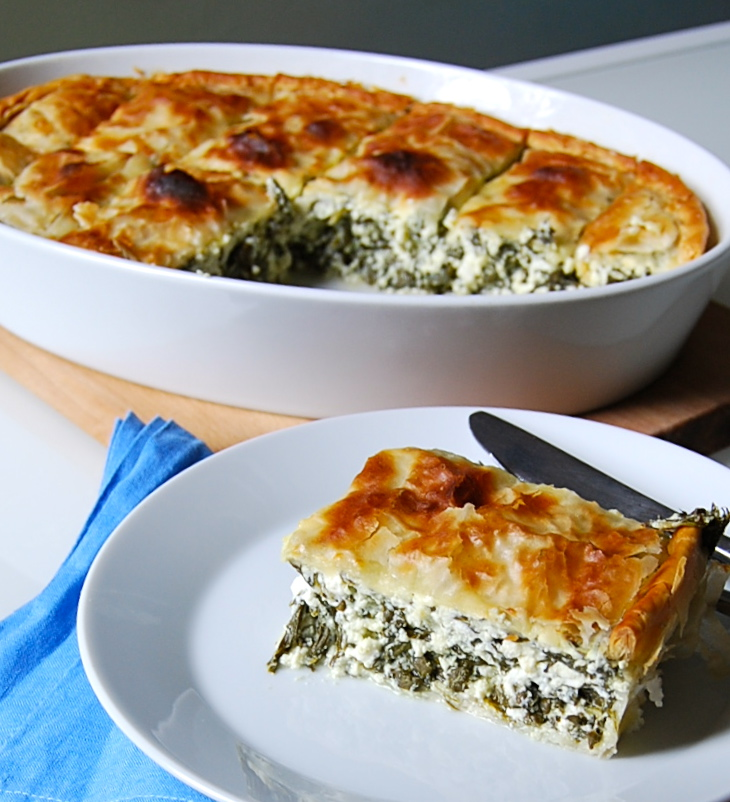

Bosnian Cuisines
If you are watching your figure, then you are looking at the wrong place. Be prepared to pack on a couple pounds visiting, because food is something to not shy away from in Bosnia. Bosnian food uses many different spices to bring out flavor in the food, many places use a traditional homestyle type of cooking and preparation for their dishes as well.
Beef
Ćevapi
Pjeskavice
Cuftete
Gulaš
Burek
Sarma
Bosanski Lonac
Punjene Paprike
Lamb
Sis Kebab
Janjetina
Janjetina sa raznja grah
Krompir sa janjetinom
Chicken
Zapecena Piletina
Pita sa Piletinom
Kvrgusa
Riza sa piletinom
Supa piletina
Pohovana Piletina
Vegtables
Sirnica
Zeljanica
Krompiruša
Tikvenica
Čorba
Kiseli Kupus
Desserts
Šampita
baklava
Tufahija
Palacinke
Kadaifi
Tufahije
Peksimeti
Tulumba
Pita is one of the main foods in Bosnia, it can be stuffed with just about anything wanted. Roughly translated it could be said that it is similar to a pie. The most popular include beef, cheese, and spinach.